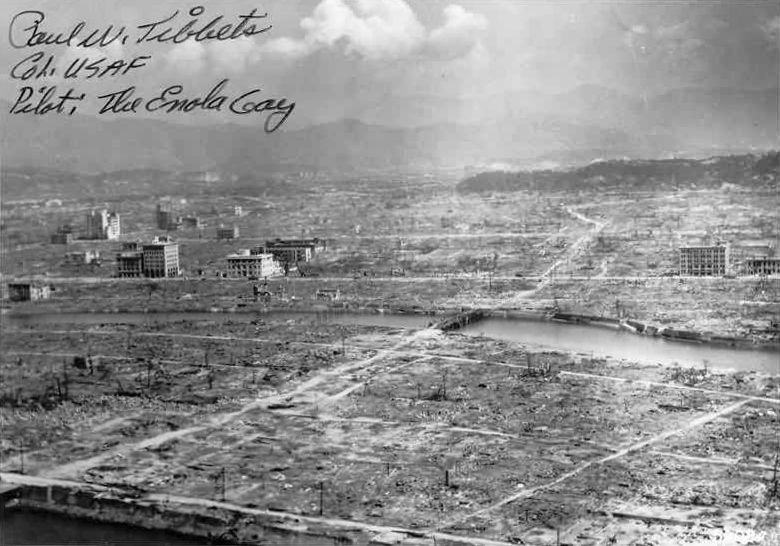
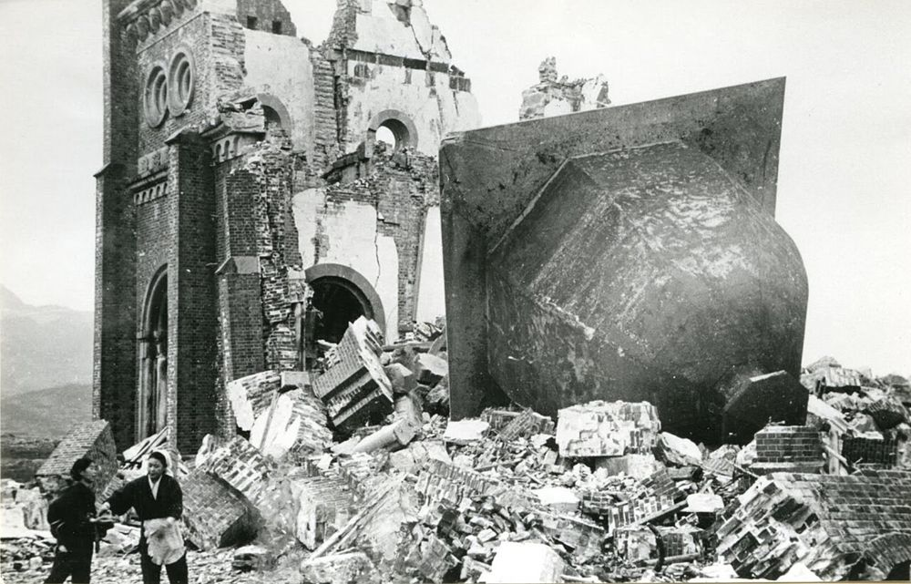

1Hiroşima'da bir iş gezisi
Tsutomu Yamaguchi, Nagasaki'de yaşayan ve Mitsubishi Ağır Sanayi'de çalışan bir gemi mühendisiydi. 1945 yazında şirketi onu bir petrol tankeri projesi için üç aylığına Hiroşima'ya göndermişti.
6 Ağustos 1945, görevinin son günüydü. Yamaguchi ertesi gün evine dönecekti. Sabah tersaneye giderken, saat 08:15'te bir ABD bombardıman uçağı şehrin üzerine ilk atom bombasını bıraktı. Yamaguchi patlama noktasına yaklaşık 3 kilometre uzaklıktaydı.

2İlk bomba
Yamaguchi daha sonra gökyüzünde 'magnezyum alevi gibi' kör edici bir ışık gördüğünü anlattı. Kendini yere attı. Patlamanın şiddetiyle kulak zarları patladı, yüzü ve kollarının bir kısmı ağır yandı, gözleri geçici olarak kör oldu.
Geceyi bir sığınakta geçirdi. Ertesi sabah, yaralı hâlde, iki iş arkadaşıyla birlikte yıkılmış şehrin içinden geçerek tren istasyonuna ulaştı. Yolda gördüğü manzaralar, ölüler ve yanmış insanlar, hayatı boyunca aklından çıkmadı. 7 Ağustos'ta trenle evine, Nagasaki'ye döndü.
3İkinci bomba
Nagasaki'de yaralarını sardırdı. Ağır yaralı olmasına rağmen 9 Ağustos sabahı işe gitti. Amirine Hiroşima'da gördüklerini, tek bir bombanın koca bir şehri nasıl yok ettiğini anlatıyordu. Amiri ona inanmadı ve 'aklını kaçırmış' olduğunu söyledi.
Tam o sırada, saat 11:02'de, ikinci atom bombası Nagasaki'nin üzerinde patladı. Yamaguchi bu kez de patlama noktasına yaklaşık 3 kilometre uzaktaydı. Yine kör edici ışığı gördü ve yere kapandı. Sargıları parçalandı ama bu patlamadan da sağ kurtuldu. Evi yıkılmıştı ama karısı ve küçük oğlu da sağ kalmıştı.

4Sonraki hayatı
Yamaguchi savaştan sonra uzun süre radyasyonun etkileriyle yaşadı. Yaraları iyileşti, işine döndü ve çocukları oldu. 1957'de Nagasaki bombasından etkilenen bir 'hibakuşa' (bombadan etkilenen kişi) olarak resmî olarak tanındı.
Hiroşima'da da bulunduğu ise ancak 24 Mart 2009'da, 92 yaşındayken resmî olarak kabul edildi. Böylece Japon hükümetinin iki bombadan da etkilenmiş olarak resmî olarak tanıdığı tek kişi oldu. Hayatının son yıllarında nükleer silahlara karşı konuşmalar yaptı ve deneyimlerini yazdı. 4 Ocak 2010'da 93 yaşında mide kanserinden hayatını kaybetti.
💡 Biliyor muydun?
- İki bombadan da etkilenen en az 160 kişi olduğu biliniyor. Ancak resmî olarak tanınan tek kişi Yamaguchi.
- Japonca 'nijū hibakuşa', yani 'iki kez bombadan etkilenmiş kişi' anlamına gelen bir ifade bu kişiler için kullanılır.
- Yamaguchi 2006'da New York'taki Birleşmiş Milletler'de nükleer silahların kaldırılması çağrısında bulundu.
✅ Kaynaklar
📷 Görseller
- Kapak: George R. Caron / Charles Levy · Public domain · Wikimedia Commons
- Atom bombasından sonra Hiroşima: U.S. Navy Public Affairs Resources Website · Public domain · Wikimedia Commons
- Atom bombası sonrası yıkılmış yapılar: Bilinmeyen yazar · Public domain · Wikimedia Commons